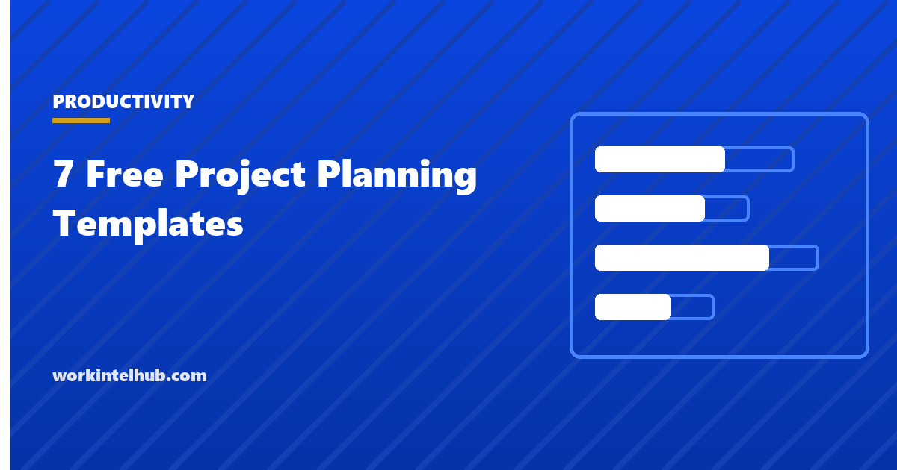

7 Free Project Planning Templates

A project plan is not one document. It is a set: what will be delivered, broken into work; when, as a schedule; for how much, as a budget; what could go wrong, as a risk register; who needs to know what, as a communication plan; and who does, decides, advises and is told, as a RACI. A plan that is only a schedule leaves the budget and the risks in someone's head, and a plan that is only a document leaves the dates unmanaged.
The seven templates here are that set, plus the plan document that ties them together. The Excel workbook holds the structured parts with totals and formulas; the Word and PDF versions carry the plan narrative and the pages that need signatures. The method section explains the order to build them in, which is not the order they are usually presented.
Download the templates
Free files: Word, Excel and PDF
Three files, free, no email required. Word to edit, Excel to track, PDF to print or share.
Templates open in Microsoft Word, Excel, Google Docs and Sheets, LibreOffice and any PDF reader. Free to use and adapt for your organisation.
The seven templates
- Plan document. The narrative that ties the set together, for approval.
- Work breakdown. Deliverables into work packages with effort and dependencies; the source for the schedule and the budget.
- Schedule. Tasks with dates, durations, predecessors and progress, with status calculated.
- Budget. Categories with budget, committed, spent, forecast and variance.
- Risk register. Scored risks with mitigations and owners.
- Communication plan. Who needs what, how often, from whom.
- RACI. Roles per activity, with a check that each row has exactly one accountable person.
Build the plan in this order
Start with scope: the deliverables from the scope statement become the top level of the work breakdown, and each is broken into packages of roughly one to ten days. Estimate the packages with the people who will do them. Then sequence them into the schedule, with predecessors, and find the critical path. Then cost the schedule into the budget, with contingency sized to the risks. Then identify the risks the schedule and budget have exposed and register them. Then plan the communication around the milestones. Finally write the plan document, which is a summary of all of the above, and get it approved as the baseline.
Teams that write the document first and the schedule last produce plans that read well and cannot be delivered. The estimate templates cover the estimating step in detail.
Risks are the plan's honesty test
A plan with three risks has not been thought about. A plan with thirty has not been prioritised. Score each by likelihood and impact, give the top ten an owner and a mitigation that is an action with a date, and review them fortnightly. Risks that happen become issues; mitigations that cost money come out of the contingency, which the budget sheet holds as its own line for that reason.
Keep it alive
- Baseline the plan at approval and keep the baseline; variance is measured against it.
- Update the schedule and budget weekly; the status report is a summary of them.
- Route scope changes through the change log, and re-baseline when the sponsor approves one.
- Review the RACI when people change; an A that has left the company is the most common governance failure.
- Close with the lessons learned from the closeout checklist and keep the plan as the template for the next one.
Key takeaways
- A project plan is a set: work breakdown, schedule, budget, risk register, communication plan, RACI and the document that summarises them.
- Build in order: scope, work breakdown, estimates, schedule, budget, risks, communication, then the document.
- Score risks, own the top ten, hold contingency as a budget line.
- Baseline at approval, update weekly, re-baseline only through approved change.
Frequently asked questions
What should a project plan include?
The deliverables broken into work packages, a schedule with dependencies and dates, a budget with contingency, a risk register with owners, a communication plan, a RACI, and a summary document that the sponsor approves as the baseline. The seven templates in the download cover each.
What is the difference between a project plan and a project charter?
The charter authorises the project and names the sponsor, manager and objectives; it is short and comes first. The plan says how the project will be delivered in detail: work, schedule, budget, risks, communication and roles. The plan is approved after the charter.
How detailed should the work breakdown be?
Down to work packages of about one to ten days of effort, each with an owner and an acceptance criterion. Smaller than that is micromanagement; larger cannot be estimated or tracked.
How much contingency should a project budget hold?
Commonly 10 to 20 percent of the base estimate, sized to the risk register: more for novel work, less for repeat work with firm quotes. Hold it as a separate line and draw on it only through recorded decisions.
What is a RACI and why does each row need one A?
A matrix of who is responsible, accountable, consulted and informed for each activity. Exactly one accountable person per activity is the rule because shared accountability is no accountability; the Excel sheet checks each row.